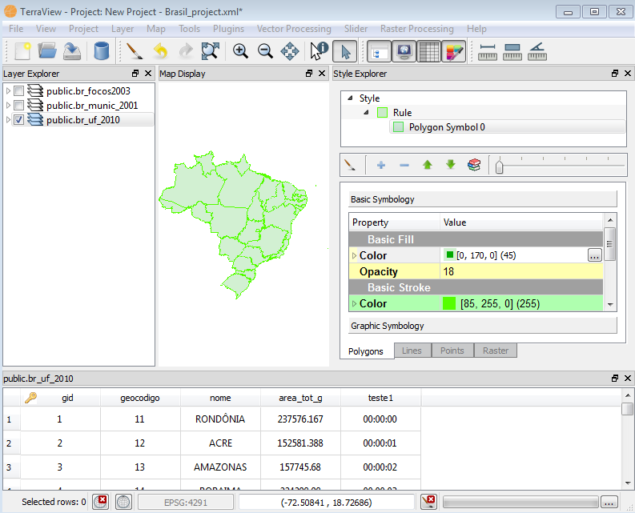

- Menu
Bar:
The Menu Bar provides access to several TerraView features.
- Tool
Bar: TerraView is initially composed of a set of shortcuts to
access the main features.
- Layer
Explorer:
The layer
explorer is a tree used to represent all layers added to the
current project.
- Map
Display: The map display is the drawing area used by
TerraView
to render layers checked on the Layer Explorer.
- Status Bar: The status bar is used to
display auxiliary
information, such as the mouse coordinates on the map display,
map
display SRID and a progress bar that represents the progress of drawing
operations running.
Other elements can be docked in the application such as:
- Data
Table: It shows a
table with the attributes associated with the selected
layer and offers some functionalities over the table.
- Style
Explorer:
It is a interface that allows you to change the style (color, symbol,
etc) of the representation (line, polygon, point, raster) associated
with the
selected layer.
- Task Progress: Displays a screen to view the running tasks.
This
screen allows the cancellation of individual tasks. Accessible by the
status bar, using the button (...).
Below you can see an overview of all these
elements. Remember that some icons and functionalities can be changed
in future version.

Once you launch
TerraView,
it
starts with an
empty project named
default_project.xml.
It can be
saved whenever required with another name. Use
Project
menu to change its descriptive properties like title and author.